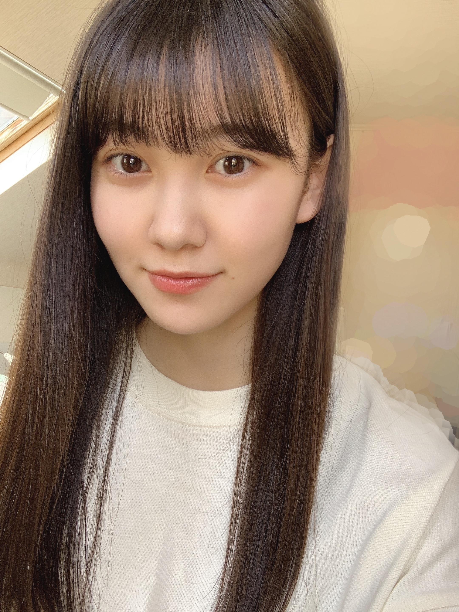
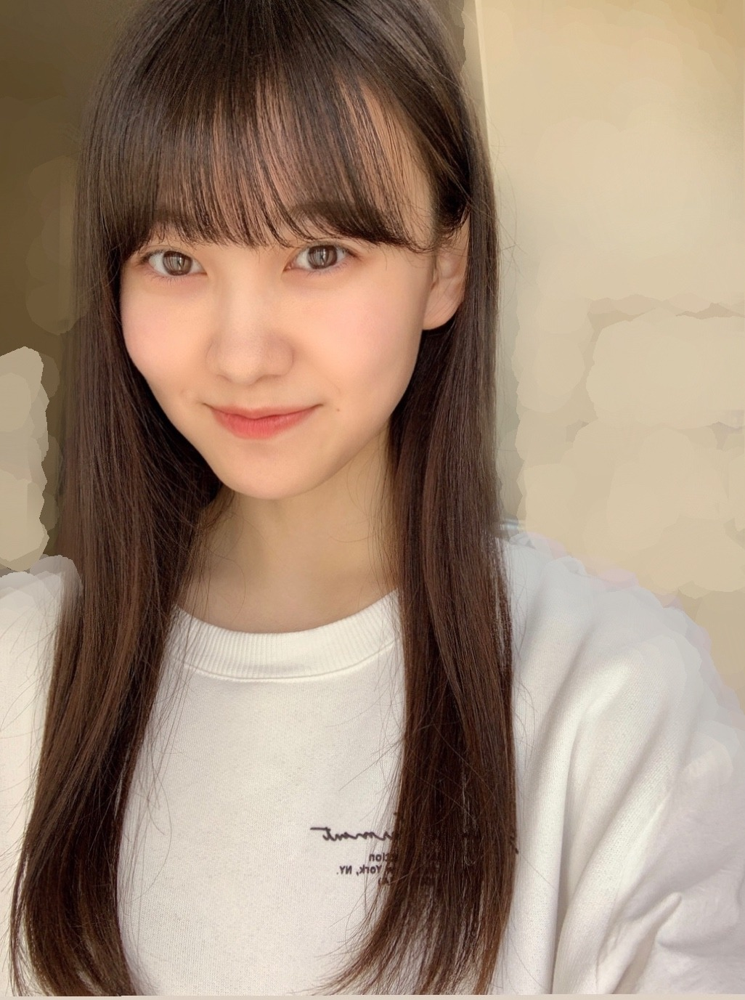

2020/0430Thuやっぱりシンプルに、初めまして。松尾美佑です。
普段はあまり早く回ってくれない頭を全力で回転させたんです。
タイトル、どうしよう。
初めまして！もいいですし、もう少しかっこ良くしたい気もしますし、顔文字がいてくれれば可愛くもできちゃいます。
( ¨̮ )可愛いですこの子。
ですが やっぱりシンプルに、
初めまして。
訪れて下さりありがとうございます。
嬉しいです。本当に。
そんなあなたは優しい心の持ち主です。
林 瑠奈ちゃんからバトンをしっかりと受け取りました！
ボンド、ちゃんと剥がしましたよ。
リレーはみんなと繋がっている気がして好きです☺︎
5人で新しいスタートの日が来るまで、それぞれの走り方で繋げます！
新4期生です。よろしくお願い致します。
名乗ります。
乃木坂46 新4期生になりました、
松尾美佑(まつおみゆ)です。

よろしくお願い致します。
坂道研修生から欅坂46さん、日向坂46さんに加入したみんなのブログを読みながら、私も この話したいなぁ、あの話もしたいなぁ、と思っていました。
そしてたまにみんなが私との写真を載せてくれていたりして。
それはそれはとっっっっっても嬉しい気持ちで読んでいました☺︎
そしてそしてついに
私達5人のブログリレーがはじまりました！
本当に有難いです。
わーーー！！嬉しいです！
5日に1回と、とてもスピーディーに順番が回って来るので ゆっくり沢山 情報を詰め込みたいと思います。
話したい事が沢山頭の中で渋滞しているんですが、
その前にちょっぴり自己紹介をさせて下さい
▷▶▷
✽ 名前 : 松尾美佑 (まつおみゆ)
✽ 誕生日 : 2004年 01月 03日
✽ 年齢 : 16歳 , 高校2年生になりました ⸜✿⸝
✽身長 : 166cm (多分？)(伸びたと思います)
✽ 出来る : バク転などのタンブリング
予告通り、とてもちょっぴりになってしまいました。
私の事、これから少しずつ知って頂けたらなと思います。
ですが私自身も正直よく分からなくて。
パッとイメージした時、私は今の所 特にこれ！と言ってキャラや個性が見つからなくて。
これから見つけたいです(´･-･`)
なので、お手数お掛けしてしまい恐縮ですが、もし良ければこれから一緒に見つけて頂けたら嬉しいです。
( ..)"
何から話しましょうか。
色々と考えていたんです。
ですがまずは、ずーーーっと伝えたかった気持ちから。
沢山 "感謝" を伝えたいです。
私が今ここにいて、こうして乃木坂46の新メンバーとしてブログを書かせて頂けているこの状況。
16年と4ヶ月弱生きてきて、関わって下さった全ての方のお陰です。
"ありがとうございます"
だけだとまだまだちっとも足りません。
配属発表SHOWROOMをさせて頂いた時、意気込みとして『可能性を信じる』と書きました。
自信が無くなった時、悩んだ時、
自分で自分の背中を押せるようにこの言葉を選びました。
なんだかかっこいい文章が出来ましたよ。
可能性を信じて、限界を決めずに精一杯頑張らせて頂きます。
改めて、これからよろしくお願い致します。
目、疲れていませんか( Ꙭ)

【我が家の超絶可愛いまるちゃんパワーでお目目復活( ☉_☉)】
癒された所でもう少し。
今、世界中が見えない敵と戦っています。
毎日のニュースや新聞を見て不安になったり、会いたい人に会えなくてさびしい気持ちになったり、外に出られなくてウズウズしたり。
どうしてもマイナスな気持ちになってしまう方も多いと思います。
私の言葉をそのまま皆さんにお届けできるこのブログという場所を通して、少しでも皆さんのおうち時間を温かなものにするお手伝いが出来たらなと思います。
精一杯みゆスマイルを届けるので受け取って頂けたら嬉しいです¨̮

【みゆスマイルと言うよりみゆニヤニヤ】
ちょっぴり硬すぎる文章になってしまったかもしれません(´･-･`)
実は私、ほんっとに優柔不断で心配性で。
困っちゃいます\(ᯅ̈ )/
こちらのブログも沢山考えて考えて、何度も書き直して、と繰り返しているうちに、
11パターンは初めましてのブログが出来上がりました。
私の心の中では一方的に11度目ましてです。
話したい事が沢山あります。
伝えたい事も沢山あります。
ですが、今回はここら辺で一旦さよならを言わせて頂きます。
また5日後に、今度は初めましてじゃないご挨拶をしましょう☺︎
初めましてのブログ、最後まで読んで下さった方、
あなたです。！！
本当に心の底からありがとうございます。
改めて改めて、これからよろしくお願い致します。
いよいよ、初めましてとお別れのお時間です。
初めまして、ありがとうございました。
何だかしんみりとした所で、
明日は〜
はんな〜りスットコドッコイ！な
弓木奈於ちゃんです！！
お姉ちゃんだけどお姉ちゃんじゃなくて、
しっかりしているけどちょっぴり抜けてて、
隣に居てくれるだけで何だか安心できて、
やっぱり大好きなお姉ちゃんです⸜❤︎⸝
楽しみです！！！
早く明日になーれ
松尾美佑でした。
間違えました
松尾 ミュウ！
でした¨̮
(いつか100点満点を頂けるように頑張って練習します¨̮)
ミュウ！！！！！！！
コメント(580)
よろしくお願いします！
ミュウ！！！！笑
ーみずきー
めちゃめちゃ応援してます。乃木坂4期生として加入してくれてありがとう！
活動もしにくいし状況やけど握手会とか楽しみにしてます
去年の研究生のツアーは受験勉強で行けんくて、今年は浪人で地元の大坂の握手会しか行かれへんけどめちゃ楽しみしてます〜
これからの乃木坂としての活動楽しみにしてます‼︎体に気つけて頑張って‼︎
たくさんの笑顔を届ける素敵な人になってください
応援してる！！！
初めまして〜〜( ˆ ˆ )
とても心のこもったブログをありがとう。
ファン想いの優しい人柄を感じました。
じゃあ、初めまして、ありがとう。
これからもよろしくね。乃木坂での活動がんばってね！！
1日でも早く乃木坂として活動できることを願います！新4期生さんにはブログを通して温かいものが伝わってきています
みゆスマイルも！
質問です！
最近のマイブームは？乃木坂ではどうぶつの森が流行ってるみたいですね、
ANNでまいちゃんから嫌なほど伝わってきています
千葉で好きなところはありますか？
同じ出身のかずみんやゆなちゃんとは何かお話ししましたか？
体調には気をつけてください！
これからよろしくお願いします☺️
ということで！みゆちゃんに質問してもいいですか？
❁好きな色
❁なんて呼べばいいか
❁おうち時間何してますか？
まるちゃん可愛いです...
研修生ライブいったよ！
タンブリングすごかった！
握手会できるようなったら
会いに行きます！
そしてよろしくお願いします！
応援してゆきます！
美佑ちゃん 初ブログ投稿待ってたよー！！
改めて乃木坂46に配属おめでとう！！！
美佑ちゃんが乃木坂に入ってくれて嬉しい！
みゆスマイル全開で頑張ってね
身長も高くて、可愛くて、バク転ができる天真爛漫な美佑ちゃんをこれからも応援するね
質問
・生田絵梨花さんとやってみたい事は？
・公式お兄ちゃんの印象は？
・ポケモンのミュウって知ってる？
・乃木坂工事中でしてみたい企画は？
今の時期大変だと思うけど、頑張ってね！
次の美佑ちゃんのブログ更新楽しみ！
これからも応援するね！！！
にょこ
頑張ってください！応援してます！
研修生ライブの時から
可能性を秘めてるのが
わかりました。
ブログも読んでて誠実さが
伝わりますよ。
これからの乃木坂の
力になって下さい
頑張ってね。
おじさんですが、これから応援せせて頂きます。
乃木坂工事中でのタンブリング、素晴らしかったです。
これからの活躍を期待してますね。
初めまして！
こうきって言います。はやく会いたいな!!
質問
・美佑ちゃんは尊敬、好きな先輩とかいる？？
こうき
初めまして！ミュウ！まず大好きな乃木坂46に加入してくれてありがとう！第一印象で笑顔が素敵でこの笑顔好きだなって思った。文字通りの美佑スマイルで癒されたよ。このリレーブログでミュウのブログを見れる喜びを噛みしめ支えて恩返しできれば幸い。ありがとう、ミュウ！
応援してます
頑張ってください
今あなたは人生の節目に居ると思います。これからどんどん変わっていくであろうあなたの人生の1番大切な時期は今だと思います。今しかできないことを、ステージに立った時に輝くために頑張ってください！
質問:あなたは今乃木坂46に入ったことに後悔していませんか？？
初めましてだね
これから一緒に坂を駆け上がっていこうね！！
乃木中見たよ〜
やっぱりバク転すごいね！！！！
ミュウもよかったよ
これから、あだ名は「ミュウ」とか「ミュウちゃん」かな？笑
呼んで欲しいのあったら教えてね〜
では、また次のブログで会おう
またね
可愛くてもうすでに推し！！！！（笑）
これからどんどん活躍していくのが楽しみです！
すらっとしてるからモデルさんとか向いてそう！
質問
みゆちゃんは、アイドル以外のお仕事で
挑戦してみたいことはありますか？？(モデル、演技などなど)
また5日後楽しみにしてます！！
ミュウ！！！！！
ブログ更新お疲れさまです( ¨̮ )
体調に気を付けてね。
改めて乃木坂４６に来てくれてありがとう！！！
これからもずっと応援していきます！！！
あの最初の4期生の制服着たときからね
これから応援します頑張って下さい
はじめまして。
みゆちゃんと同い年です！
応援しています
名前、覚えてもらえたらいいなぁ。。
みゆちゃんのブログに毎回コメント書きます！
みゆちゃんは本当に可愛くて、清楚なイメージで、乃木中のときも、バク転？とか凄かったし、、
みゆちゃんみたいに、綺麗でスタイルが良くなりたいなぁって。///
私の憧れです！ みゆスマイルもみゆニヤニヤも大好きです！
みゆちゃんの事を知ったのは、配属発表SHOWROOMの時なのです！ちょっと遅くてごめんなさい！
出てきた時、一目見て憧れになりました！
やっぱり笑顔が可愛い人はいいなぁって。。
長々とごめんなさい！
みゆちゃんが100点満点貰えるように応援してます！
もちろん乃木坂での活動とかも応援してます！
これからも頑張って下さい！体調に気をつけつつ、、。
質問とか今受け付けてるか分からないけど、一応聞きたいこと書いておきます！
● みゆちゃんがオーディションを受けようと思ったきっかけは何ですか？
応援してます！！！
これからもブログ見ます
乃木中のみゆちゃんのタンブリングが凄すぎて、録画してある分、何度も見直していたくらい凄い！！って思ってたよ( ´ ▽ ` )
これから色々とあるだろうけど、負けずに頑張っていこうね（＾ν＾）
ってことで、これからよろしく！(^o^)
中学生女子の百合の花です！ぜひ覚えてください！
坂道研究生の中で、美佑ちゃんが1番好きだったので、乃木坂46に入ってくれて、とっても嬉しいです♪
質問させて下さい！
Q.何と呼んで欲しいですか？(私は美佑お姉さんで行かせてください！)
Q.好きな色は何ですか？
Q.年下の女の子でもファンになっていいですか？
ずっと応援してます！
これから、よろしくお願いします！
百合の花
はじめまして!美佑ちゃん推しです!
「可能性を信じる」、とってもいい言葉ですね
可能性を信じて頑張ってください!僕も精一杯美佑ちゃんを応援します!
まるちゃん、とっても可愛いですね
でもみゆスマイルはそれを超えてます!本当に可愛い...
こんな毎日で大変ですが、みゆスマイルで元気が出ました!ありがとう
また5日後を楽しみにしています!
まってたー！！
これから頑張ってねー！！
握手会行く！！
初めまして 乃木坂464期生 おめでとう㊗️
コロナが終息したら、握手会とかライブで逢いにいくね。
福岡から応援しています。
健康には気をつけて、頑張ってね。
北海道から応援してる高校1年生の女子です！
これからの活躍楽しみにしてます！！！
美佑ちゃんの事は「研修生ツアーの意気込みSHOWROOM」、「３坂道配属SHOWROOM」、「乃木中」と３度にわたり見てきたので、僕としても「３度目まして」になるかもです( *´艸｀)
そして、早速乃木中では５人の事をいろいろと楽しませてくれたね♪先輩達＆バナナマンさんが( *´艸｀)
（あれを見て、夜中放送だけど爆笑しちゃったのを今でも思い出すよ）
乃木メンは先輩達も、先に入った４期生ちゃん１１人（ほぼ同期）もめっちゃ優しいと思うしこれからは、美佑ちゃんの「感じたままを見聞きして、表現できるように」ファンの人達も優しいからフォローしていくよヽ(^o^)丿♪
そして、初めまして。でこんなことを言うのは失礼かもしれないけど、僕の事も美佑ちゃんの頭の片隅に置いといてほしいのでちょっと言うと・・・・。
「僕は生まれつき下半身不随という個性を持っています」（でも、杖をついてなんとか歩けるよ♪）
僕も新４期生ちゃんに知ってほしいから「ウソ偽りなく」正直に自分のことをちょっと書いちゃいました。
これからは、同期であり先に加入した１１人と共に、一緒になって思いっきり乃木活を楽しんでね。
（そして、ちょっと前の「田村の真佑の助」ちゃん(笑)のブログ（個人ブログ前のリレー形式ブログのや～つ）に美佑ちゃんも居たから、一瞬「あれ？この２人、姉妹！？( *´艸｀)」って思う位、可愛かったよ）
それじゃあ、次のブログもめっちゃ楽しみにしてるねぇ～ヽ(^o^)丿５日後に会おうね☆彡
これからも、一緒に楽しもうね♪乃木活＆ブログという名の「ファンと乃木メンとを繋ぐ宝物を♪」
（僕も、比較的ブログカキコは「超長文」(笑)になっちゃうかもだけど、許してね☆彡そして、新４期生ちゃんは５人という事もあって、次のブログまでの順番がめっちゃ早いかもしれないけど、それすらも楽しんでね♪）
体に気をつけて頑張ってね
これから大変だと思うけど応援してるよー
これからよろしくお願いいたします！
応援してます！
私同級生なのでぜひよろしくー！
新4期生みんな仲良くて可愛すぎる(><)
コメントする

PROFILE
新4期生リレー
202104
| SUN | MON | TUE | WED | THU | FRI | SAT |
|---|---|---|---|---|---|---|
| 1 | 2 | 3 | ||||
| 4 | 5 | 6 | 7 | 8 | 9 | 10 |
| 11 | 12 | 13 | 14 | 15 | 16 | 17 |
| 18 | 19 | 20 | 21 | 22 | 23 | 24 |
| 25 | 26 | 27 | 28 | 29 | 30 | |

美佑ちゃん 初ブログ投稿待ってたよー！！
改めて乃木坂46に配属おめでとう！！！
美佑ちゃんが乃木坂に入ってくれて嬉しい！
みゆスマイル全開で頑張ってね
身長も高くて、可愛くて、バク転ができる天真爛漫な美佑ちゃんをこれからも応援するね
質問
・生田絵梨花さんとやってみたい事は？
・公式お兄ちゃんの印象は？
・ポケモンのミュウって知ってる？
・乃木坂工事中でしてみたい企画は？
今の時期大変だと思うけど、頑張ってね！
次の美佑ちゃんのブログ更新楽しみ！
これからも応援するね！！！
にょこ